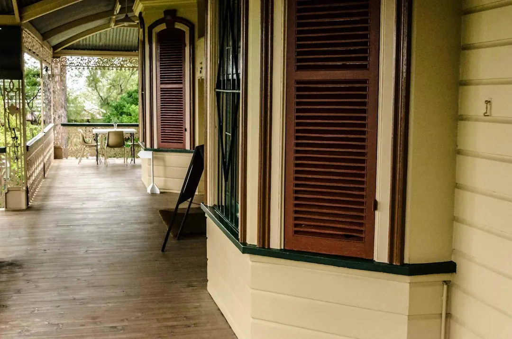

Minor roller door repairs in Brisbane are listed at around $90 to $310, depending on the fault and parts required. The practical process is to describe the door style, suburb and symptoms, then have the fault checked as mechanical, opener-related or electrical. Common paths include track, spring, cable, roller, remote, keypad and motor work. Replacement is considered when repair is no longer the sensible option.
For roller door repairs brisbane options, the useful starting point is a clear description of the fault, the door type and whether access is urgent.
Roller Door Repairs Brisbane Explained
Roller Doors Brisbane describes a repair process built around the actual fault rather than one generic job. A door that is jammed, noisy, sticking, off its guides or no longer securing properly needs different information from an opener that has stopped responding.
When making an enquiry, provide the suburb, door style and what happened. Useful details include whether the problem involves the spring, opener, remote, track, cable or access to the garage. A specialist can then consider whether the fault is mechanical, opener-related or electrical before confirming the next step.
- Describe the sound, movement or access problem.
- Say whether the door is stuck open, jammed shut or operating poorly.
- Identify any remote, keypad, motor, spring, guide or track symptoms.
- Ask what should be checked before parts are replaced.
Match the repair to the component
The service list separates several problems that are often grouped together. Roller door repair can involve the curtain, barrel, guides or general mechanical faults. Opener work can involve the motor, receiver, limit settings or safety beams, while remote and keypad programming deals with access devices and receiver problems.
Spring, cable and roller faults require a different assessment. The published service descriptions include broken torsion or extension springs, frayed lifting cables, worn rollers and tired hardware. Off-track work focuses on re-railing, bent tracks and alignment. Asking which component has failed helps prevent a vague quote that does not explain the proposed work.
Electrical work is treated separately where hardwired opener wiring or fixed electrical components are involved. The page states that a licensed Queensland electrician is used where required. That is a useful question to put to the provider when the fault is not limited to removable hardware or settings.
Repair, parts replacement or a new door
A repair-first diagnosis does not mean every ageing door should be repaired. The stated process is to check the curtain, motor and hardware, then explain whether service, repair, parts replacement or a full new door is the sensible path. That gives the homeowner a decision point instead of assuming replacement from the outset.
Repair is the relevant discussion when the fault can be isolated to a component such as a roller, cable, spring, track, remote or opener part. A new installation becomes the separate option when the existing door is no longer the right repair proposition. The installation service includes roller, sectional and tilt doors, with opener options and compliance notes where building-work thresholds apply.
Cost questions that improve a quote
The published FAQ gives a guide of around $90 to $310 for minor roller door repairs in Brisbane, depending on the fault and parts required. It is a range for minor work, not a universal price for every door problem. A spring failure, off-track door, opener fault or urgent access issue may need a different assessment.
Before accepting a quote, ask what the price includes and whether parts, adjustment, programming or electrical work are separate. Ask whether the diagnosis is for the curtain, barrel, guides, motor, receiver, limits, safety beams or access device. If replacement is suggested, ask what evidence shows that repair is no longer the sensible path.
For a clearer comparison, record the door style, visible damage, operating symptoms and urgency in the first message. The published enquiry flow then moves from describing the fault to a fault check, confirmation of the repair path and booking the next step if the proposed work is accepted.
Who this applies to across Brisbane
The guide is relevant to Brisbane homeowners and other property users dealing with roller doors, garage doors, opener faults or access problems. The listed service map covers northside, southside, bayside and western suburbs. Its location examples include townhouses, duplexes, apartment basements, Queenslanders, renovated post-war houses and light-commercial sheds.
That variety matters when describing the job. A double garage, townhouse complex, split-level home or shed can present different access and hardware questions. The location material also identifies suburb-specific property contexts, including steeper driveways in The Gap, apartment basements in Indooroopilly and character homes in Coorparoo and Camp Hill.
For another local editorial perspective on the same repair topic, see this Brisbane roller door repair guide. Use any guide to prepare questions, then confirm the actual fault, scope and quote with the specialist handling the enquiry.
- Describe the fault. Share the suburb, door style, symptoms and whether access is urgent.
- Identify the system. Say whether the issue concerns the spring, opener, remote, keypad, track, cable or rollers.
- Request a fault check. Ask whether the problem is mechanical, opener-related or electrical.
- Confirm the path. Compare service, repair, parts replacement or a new door before booking.
| Situation | Useful question | Likely discussion |
|---|---|---|
| One identifiable fault | Which part has failed? | Service, adjustment or parts replacement |
| Repeated or broader problems | Is repair still sensible? | Repair compared with a new door |
Common questions
How much do minor repairs cost in Brisbane? The published FAQ places minor roller door repairs at around $90 to $310, depending on the fault and parts required. It is a guide for minor work, so ask what the quote includes.
What information should I provide when making an enquiry? Provide the suburb, door style and what the door is doing. Mention whether the issue involves the spring, opener, remote, track, cable, keypad or urgent access.
Can an opener fault involve electrical work? It can depend on the component involved. The published service information says hardwired opener wiring or fixed electrical components are handled by a licensed Queensland electrician where required.
When should repair be compared with replacement? Ask for the curtain, motor and hardware to be checked first. The stated process is to explain whether service, repair, parts replacement or a full new door is the sensible path.
Are urgent garage door problems covered? The listed emergency service is for doors stuck open, jammed shut or left unsafe after a spring, opener or impact failure. Describe the access problem clearly when contacting the provider.
This guide covers Brisbane roller and garage door fault identification, repair choices, cost questions and enquiry preparation.